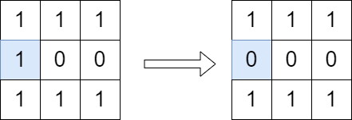
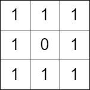

| Category | Difficulty | Likes | Dislikes |
|---|---|---|---|
| Algorithms | Medium | 631 | 33 |
array | dynamic-programming | depth-first-search | breadth-first-search | matrix
google
You are given a 0-indexed m x n binary matrix grid. You can move from a cell (row, col) to any of the cells (row + 1, col) or (row, col + 1) that has the value 1. The matrix is disconnected if there is no path from (0, 0) to (m - 1, n - 1).
You can flip the value of at most one (possibly none) cell. You cannot flip the cells (0, 0) and (m - 1, n - 1).
Return true if it is possible to make the matrix disconnect or false otherwise.
Note that flipping a cell changes its value from 0 to 1 or from 1 to 0.
Example 1:

Input: grid = [[1,1,1],[1,0,0],[1,1,1]]
Output: true
Explanation: We can change the cell shown in the diagram above. There is no path from (0, 0) to (2, 2) in the resulting grid.Example 2:

Input: grid = [[1,1,1],[1,0,1],[1,1,1]]
Output: false
Explanation: It is not possible to change at most one cell such that there is not path from (0, 0) to (2, 2).
Constraints:
m == grid.lengthn == grid[i].length1 <= m, n <= 10001 <= m * n <= 105grid[i][j] is either 0 or 1.grid[0][0] == grid[m - 1][n - 1] == 1